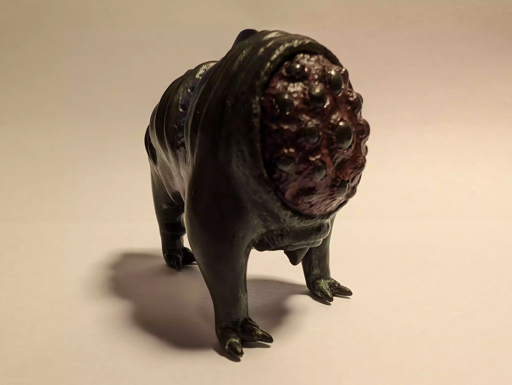
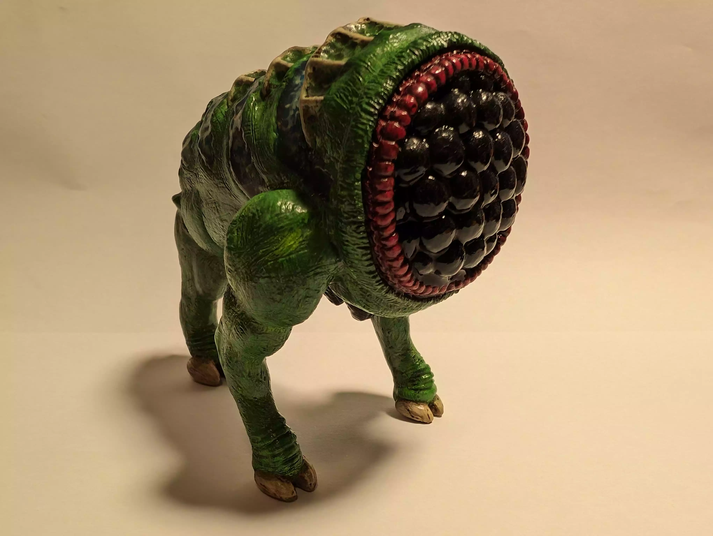

Hello, my name is Jonas
I have been sculpting off and on for twelve years. I was always intimidated by sculpting because I thought that only water-based clay was available, requiring a kiln to fire.
Then I watched a TED talk by Adam Savage (from MythBusters) In it he talks about his creative process and what gets it going. The thing that triggered it this time was the fact that no complete dodo skeleton exists where 100% of it is from the same individual.
So he decided to sculpt a life-size dodo skeleton (he had never sculpted before) out of something called "Super Sculpey" a type of clay that can be "fired" in a regular kitchen oven to become like plastic.
This triggered my creativity, and I bought some right away and started sculpting. Finally, sculpting felt accessible and easy (in the sense that no extra equipment was necessary) With this blog, I want to make you feel like trying sculpting yourself.
Clay, materials and tools
Clay

There are several different brands of polymer clay, each with their own strengths and weaknesses.
Super Sculpey
It is a very easy clay to work with, and when baked, it is rock hard, which also makes it brittle. It's good for making solid pieces, but not so good for small details that stick out (like teeth, fingers, hair, etc.) because they will easily snap off.
Fimo professional
Harder to work with doesn't blend together as well as super sculpey, but is more flexible after baking; it won't break as easily. It also comes in a lot of colours so you don't have to paint it afterward. I prefer to paint my sculptures, mainly because I just end up smearing the colours together when sculpting with coloured clay.
Cosclay
Easy to work with, a little crumbly at first, but after kneading it a bit, it's fine. It's extremely flexible after baking (almost like rubber), making it perfect for small details. The only major negative is that it's relatively new, so it isn't available in all countries (like Sweden, where I'm from)
Additional tips
I mentioned kneading earlier; all polymer clay has to be kneaded before use. Super Sculpey is the easiest to knead; Fimo and cosclay are difficult because they are very firm and crumbly. A tip is to knead small amounts at a time. One final type of clay is liquid clay, also known as bake'n'bond. Polymer clay can be baked several times (I don't think there is a limit), but if you want to add raw clay to baked clay, you have to use liquid clay as a sort of glue to help it stick.
Tools


There are cheap tools from eBay and Amazon or more expensive ones like those from Staedtler for Fimo professional or when starting out, you can use butter knives and toothpicks. Tools from other hobbies are also useful, like palette knives for cutting, smoothing and spreading clay or liquid clay. Stiff brushes can be used to add texture, like wrinkles.
Other materials

Steel or aluminum wire can be used to create an armature ("skeleton") for bigger and more complex sculptures. Aluminum foil can be used to "bulk out" the sculpture to save on clay, ensuring that the layer of clay isn't too thick. After baking, polymer clay can be carved, sanded and drilled.

I prefer to paint my sculptures. I use miniature or war gaming paints like Vallejo, Citadel and Tamiya. You can also use cheap craft paint, but with paint, I've found that the more expensive stuff is nicer to work with.
You can do it!
It's intimidating to start any new hobby. You might think that your sculptures look bad or that you will never get better. But believe me, you will! As an example, here is a picture of a sculpture (a "Hound-eye" from the video game "Half-Life") I made when starting out vs. the same creature sculpted again three years ago:
